给姚秘书长的一封回信
关于我的职业规划与选择
尊敬的姚秘书长：
您好！非常感谢您给我邮件回复！也非常感谢您认真看了我的简历！昨晚收到邮件的时候，我内心非常激动。考虑到不打扰您休息，我先暂时按捺住了自己激动的心。昨晚躺在床上的时候，脑子里反复想着您问我的职业规划。非常感谢您在忙碌的日程中仍然愿意倾听一个职场小白的心路历程。我也一直在想通过什么样的形式来呈现会更好。其实我有好多想说的，最后想用Codex做一个展示页，方便我将自己的想法一一道来。阅读全篇可能需要花费您十分钟的时间（包括观看视频的时间），如果您想直接了解我的求职意向和职业规划，可以下滑到最后，感谢您的观看。
我为什么会想走上公益之路
其实看到您的回复，下意识在我脑海中呈现的是一张张合影照片，他们都是我在过往实践中留下的。或许您不曾想到，在我回想自己交流接触的人群时，居然是老人和小朋友居多。一方面我很喜欢和老人、小朋友交流，我会主动开启话题；另一方面，我性格开朗、踏实，比较受老人们喜欢，又带点俏皮和幽默，经常逗得小朋友哈哈大笑。
我和公益的结缘，来自于大一时参加PEER毅恒挚友（一个NGO）的暑期支教志愿服务，这次经历彻底改变了我人生的方向，这也是我后面在本科和研究生选择社工专业的主要原因。
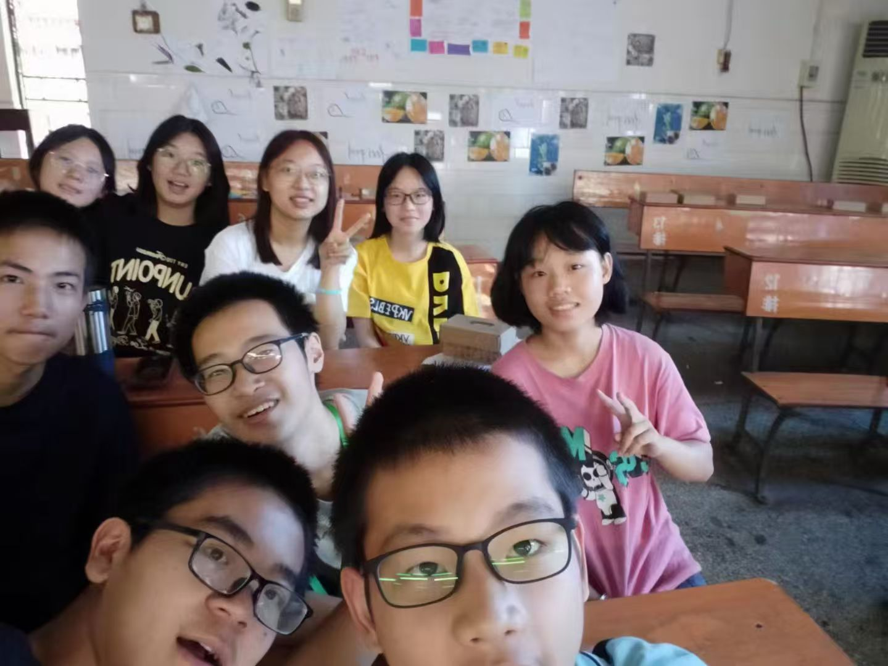
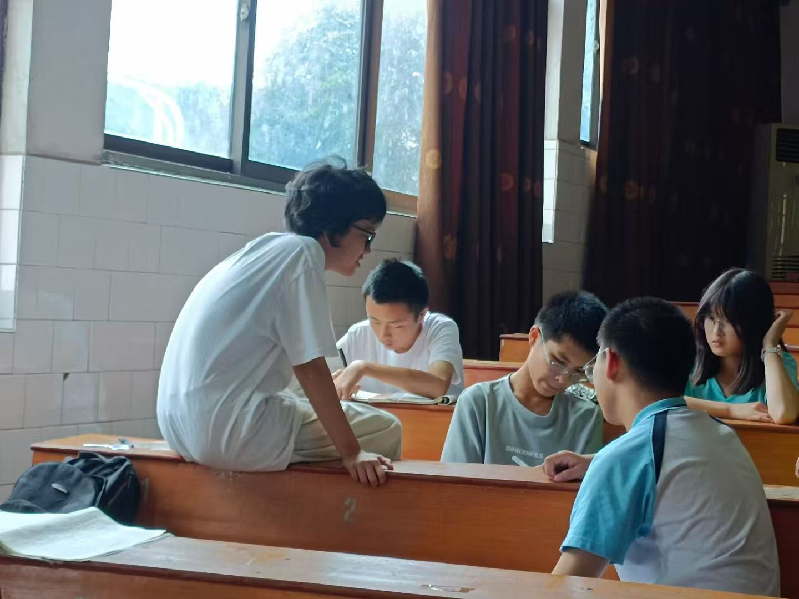
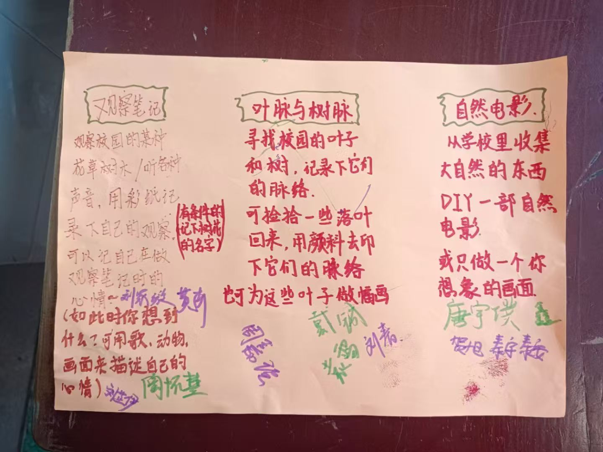
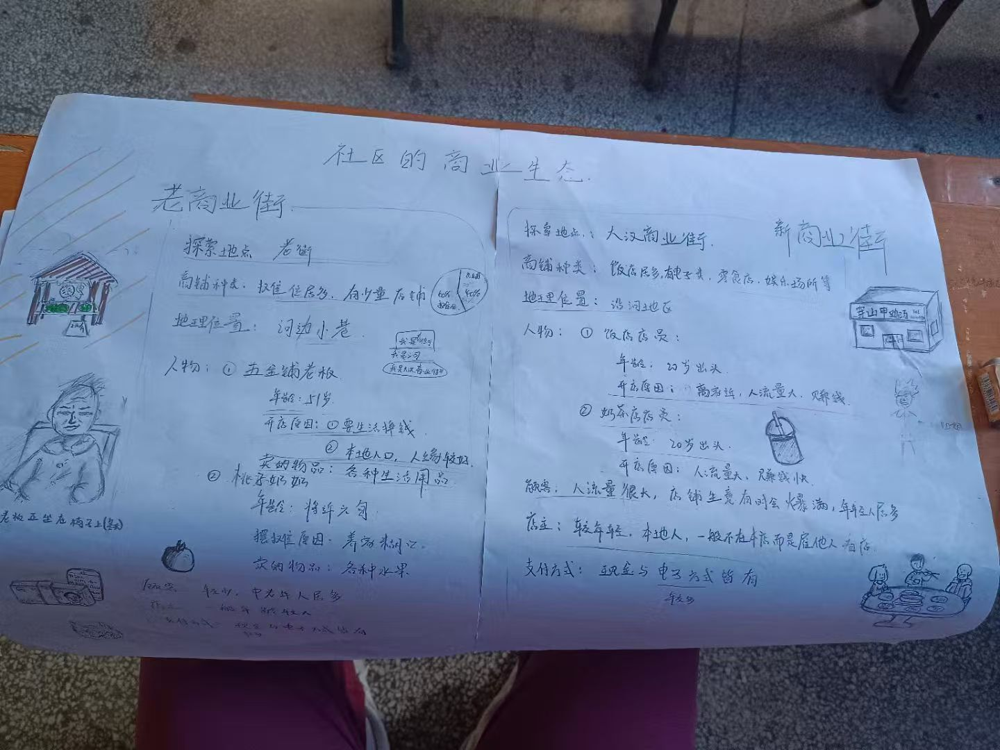
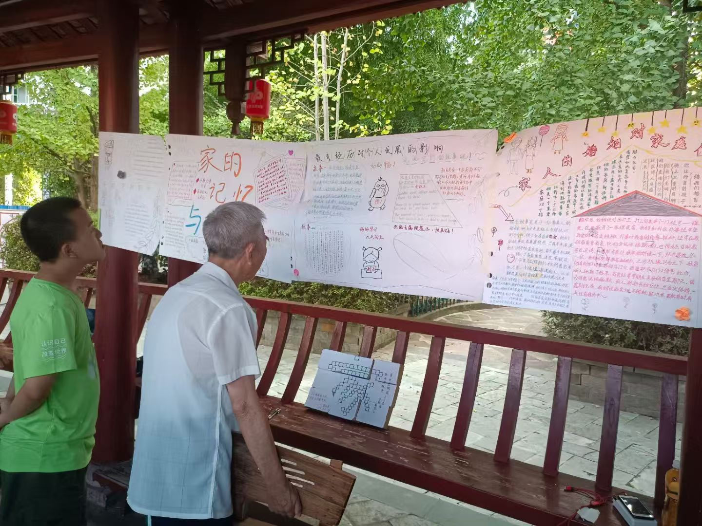
PEER毅恒挚友暑期支教留下的一些瞬间
那时的我们面对的是县中塌陷的现实问题，希望通过议题的探讨、活动的安排，来增添一些县中素质教育的可能。在开展服务的过程中，我却遇到了矛盾和纠结。县中的塌陷主要是两个方面，一是师资的流失，优秀的老师不愿意在不发达的县域发展，二是优质学生的流失，优秀的学生更多想要去周边城市更有名的高中就读。我们去的时候正是面临着这样的情况，服务中学上一届的高考成绩非常糟糕，导致校领导给学生疯狂施压。初升高还未入学的学生们，他们除了在白天和我们一起进行议题的探讨，晚上还需要在教室补课。我看着他们忙碌的背影，第一次思考他们真正需要的是什么。我知道高考对人生道路的重要性，觉得多考一分对他们来说都万分好，因此补课是不是更为切题。但是我又真的很喜欢我们设计的议题活动，非常有意义，能带给他们无法在现有教学中学到的感受和思考。当然，这只是在我心中的感慨，事实是我们和学生们一起度过了一个非常难忘和完美的夏天。其实不用想太多，答案已经在他们参加活动的一张张笑脸中展现了。他们很开心，活动的开展给他们未来的高中生涯开出了一道光，留下了一道印记，这就已经足够了。这样的影响也一直持续到今天，我们很激动去年他们高考的时候出了一个状元录取到北大，我带过的学生也考上了很好的学校，我们留有联系方式，彼此在朋友圈帖子下留言，看到他们的成长，我很是感动。
或许这就是公益行动的意义，纵使可能不被很多人理解，纵使可能会怀疑自己，纵使会遇到很多困难和挫折，但是人和人之间相处影响的反馈是直观的。当你去做了，坚持做下去，行动本身会告诉你答案。
然后我就在大二的暑假去参加了中国健康与养老追踪调查，作为访问员在农村寻找追踪对象走访调查。现在回想起来，这段经历对自己真是全方位的历练。我们就拿着北大的一张函，剩下的全靠自己找、沟通。遇到知道这个项目的村委会还好，不知道的完全就是靠自己挨家挨户问。我简直是练就了一番过硬的问路本领，也能感受到村民们淳朴的善意。我自己本身就是农村长大的，对于熟悉的乡土环境感到非常亲切，村民们大多数也很配合，凭借我高超的访问技巧bushi），访问做起来还是比较顺利的。唯一的挫折就是一个奶奶，她总认为我们是骗子，来收集她的个人信息骗钱的。我一去她就指着我开始骂，拿扫帚赶我，把门关了根本不理我。我就开始了漫长的劝说过程，见还是不理我，我就坐在她家门前的坝沿上等她。其实奶奶就是不忍心的哈哈，我知道，虽然她装作很凶，但是农村这个充满人情味的地方，我相信自己坚持肯定是能等到的。果不其然，等了一个多小时，见我还一直坚持坐着等她，她还是把门打开了，让我进屋去坐。我再把自己的访员证，各种证明材料给奶奶看，再乘胜追击，劝说一番，终于是把奶奶哄开心了，也在她家聊了蛮久，走的时候还被塞了花生。
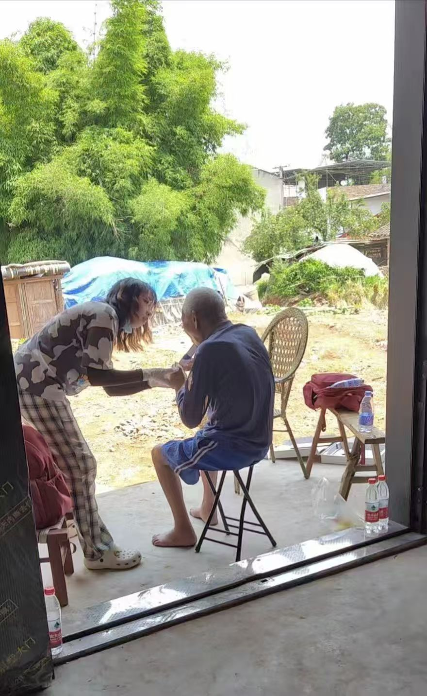
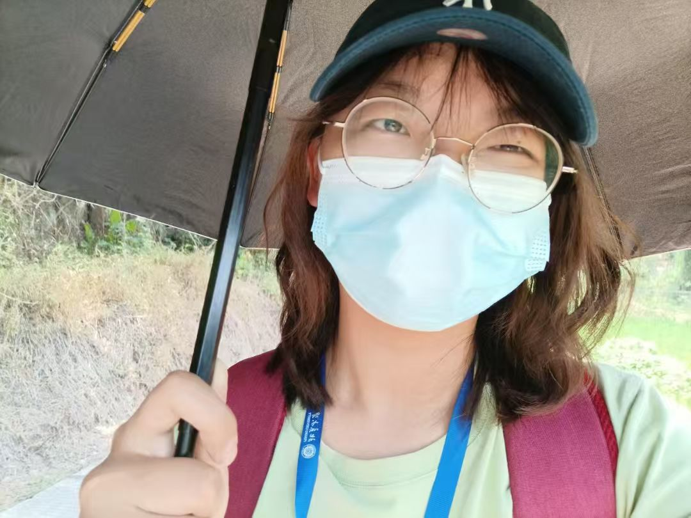
中国健康与养老追踪调查途中的一些瞬间
就是这样的场景，一张张一片片留在在我的脑海中，我现在写来都还是觉得很温暖、很幸福。虽然这一路吃的苦真的不少，我们辗转各个农村将近一个月的时间，但是我总是能记住这些瞬间，也正是它们化作了我前行的动力。所以，我怎能不爱公益这个事业呢？
大二的暑假我还参加了去往花垣县十八洞村的实践调研，这次调研的主题是有关乡村振兴和非遗传承。通过苗绣合作社，我真实感受到了乡村振兴带来的改变。除了基建和经济，更重要的是我们一路上切实感受到苗绣产业让很多女性选择留下，农村少了很多留守儿童和留守老人。我现在还能想起我们入户时，一个小女孩儿说，她很开心，因为村里旅游业和非遗传承的发展，她的妈妈不用再外出打工，可以在家陪伴他们成长。我觉得这很有意义，也愿意以此为启发在之后从事相关公益事业的时候去推动其在其他地方落地。（如有兴趣可以观看我们剪辑的视频）
花垣县十八洞村实践调研视频
大三、大四为了准备保研，我没能再挤出时间暑期参加各种项目活动，但我一直在做志愿服务，我参加了陪伴孤独症儿童的活动，为他们打造了一款产品（虽然没有资金落地）；我参加了小米公益基金会春晖之家的系列活动，去探望重疾儿童。我的本科毕业论文，也是在四川德阳一农村调研撰写的，感谢农村的爷爷奶奶们，无数次地包容我这个晚辈，知无不言，言无不尽，盛情给我留饭，真是无法拒绝啊哈哈哈。我会因为他们的喜爱和鼓励而感到非常自得和开心！
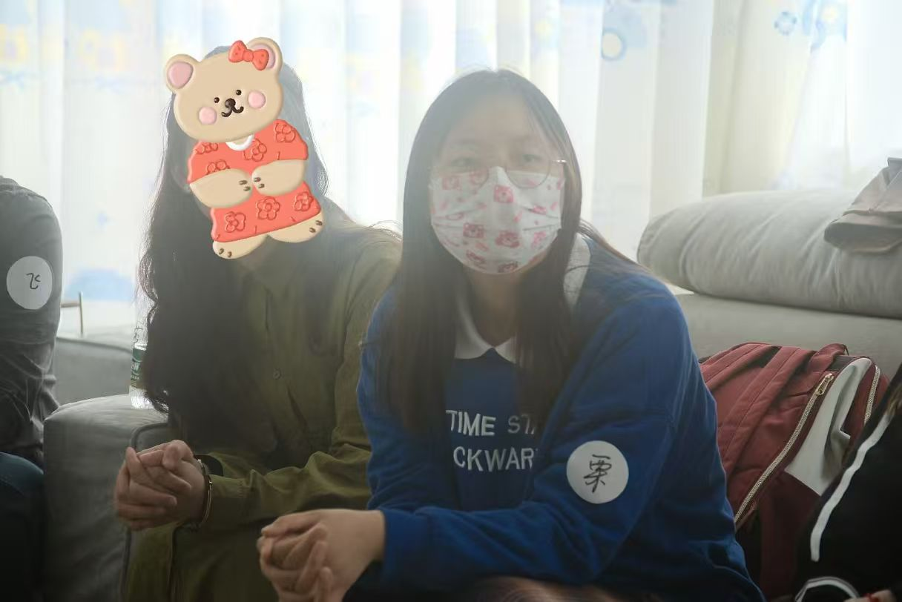
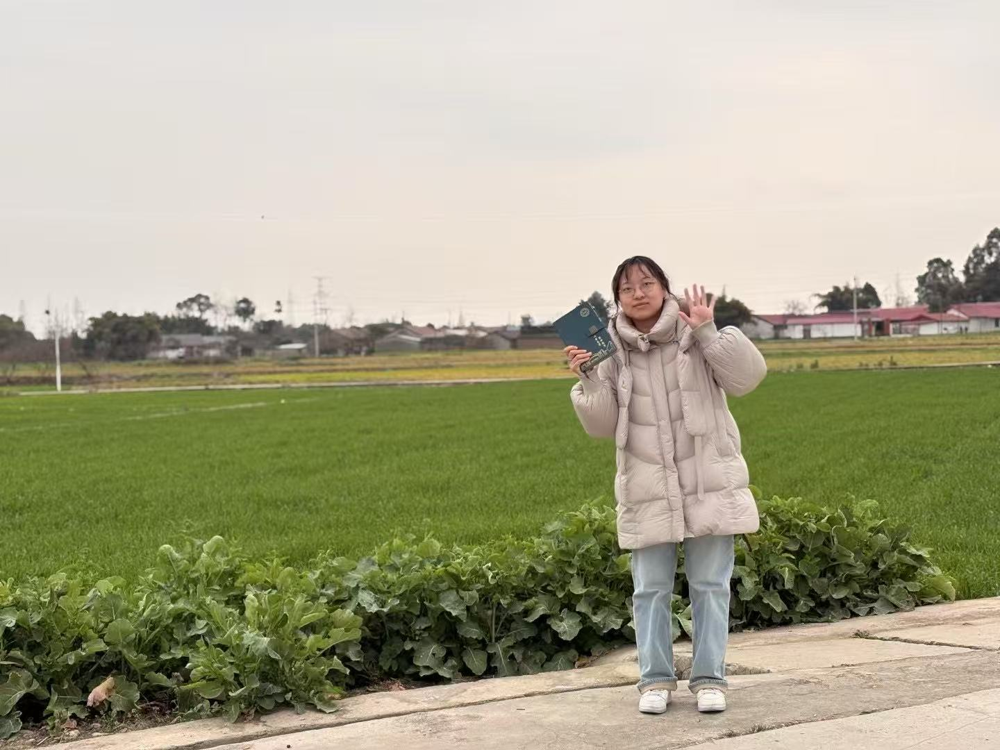
志愿服务与田野调研中的一些瞬间
读研期间我第一个加入了青年志愿者协会，作为春晖助老项目的负责人带领活动。在每周去往颐养院的时间里，我牵起了一双又一双手，虽然我们素不相识，但是互相陪伴的笑意是不减的。虽然一次又一次去，一次又一次被遗忘（老人们大多有阿尔兹海默症），但是我相信坚持是有意义的，因为这个服务的价值就体现在服务的过程中。
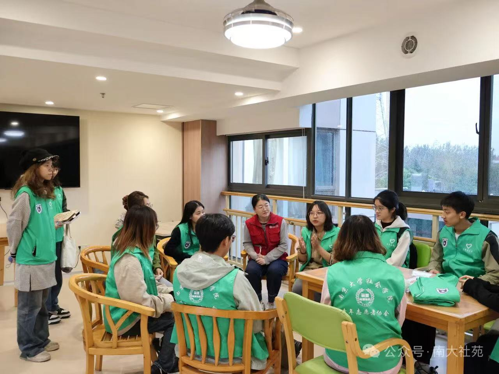
春晖助老项目活动现场
我其实一直都很感激，很感激我这一路上遇见的人，大家给予我这么多的温暖和善意，也让我一次次地肯定自己，相信自己也是一个真诚而温暖的人。很感激我的人生历程能和公益产生这么强的关联，以至于我真的很想进入这个行业。在找暑期实习的这段时间里，我能感受到所有企业对技术、AI相关产品人员的需求。我拥抱技术的更新迭代，但不想要去追寻这一浪潮。对我来说，我有自己更想做的事业。我也很赞同您在分享会上说的，想进互联网大厂，可以在不同的岗位上多多历练，训练在互联网工作的思维逻辑，我会朝着这个方向努力。不过如果有机会，从公益岗位进入对我来说更好，既能让我积累这一领域的经验，我也相信自己能学习到整体的工作逻辑。因为我未来还是坚定想要在公益领域发展。最后，为什么选择互联网大厂基金会，是因为能有更大的平台，更多的资源做一些事情，另一方面也能影响更多的人。
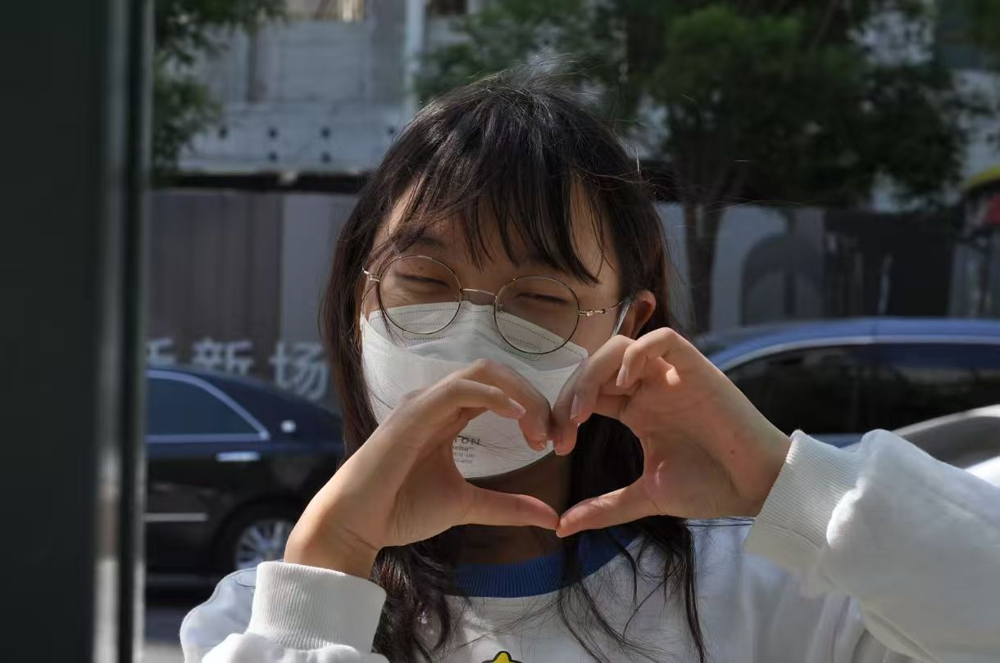
带着热忱，也带着感谢
感谢您看到这里，我或许没有在互联网大厂实习过，但是我有足够的热忱、信心和自驱力来到一个像阿里一样的大平台，去做自己想做的事业，实现自己的梦想。如果能够有幸和阿里结缘，我将不甚感激，也非常感谢您给我一次机会，让我能够记录下自己内心的想法。
再次表达感谢，祝您在工作生活中事事顺意，开心自在！
2026年5月29日